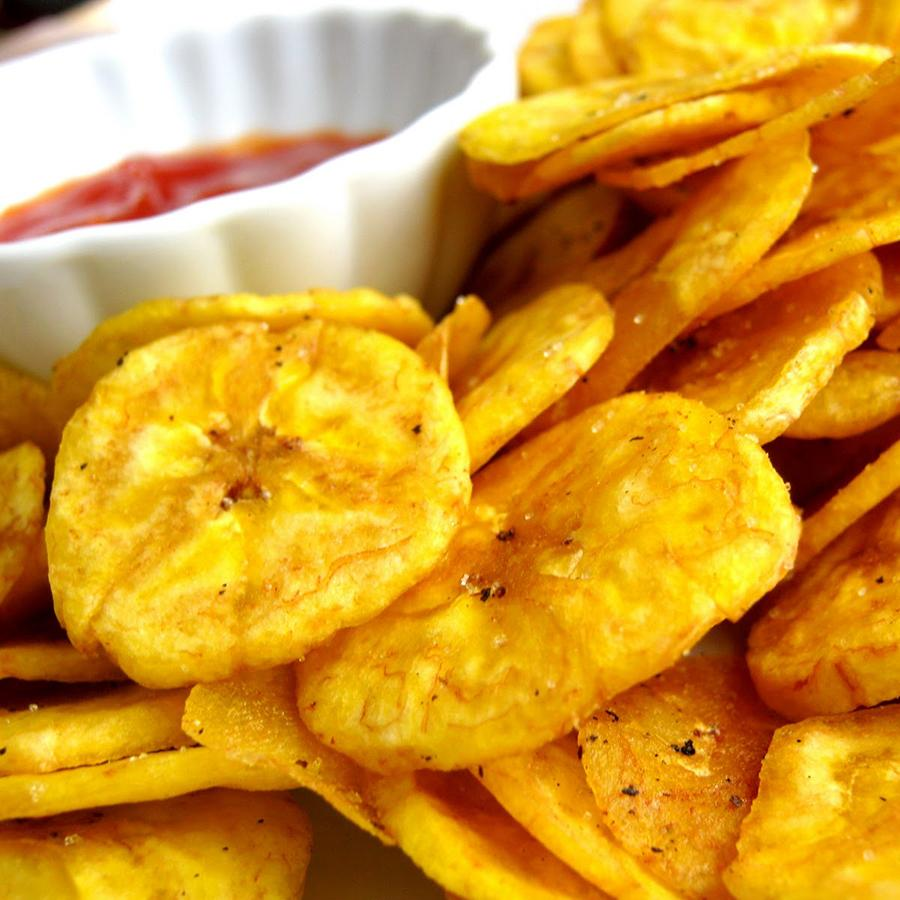

Acerca de nosotros
¡Hola, amantes PREFECO! Somos Platanitos Di´ Oro, un equipo apasionado por traerles directamente a su hogar el sabor inigualable de los platanitos fritos más ricos. Nuestra misión es simple: compartir con ustedes la alegría de un snack crujiente, natural y lleno de tradición mexicana.
Todo comenzó con una receta familiar secreta y el deseo de compartir un pedacito de nuestra cultura. En Platanitos El Buen Sabor, seleccionamos cuidadosamente los mejores plátanos macho, los cortamos a la perfección y los freímos hasta alcanzar ese dorado y crujiente ideal que tanto nos gusta. Cada bolsa es el resultado de dedicación, amor y la promesa de una experiencia deliciosa.
En Platanitos El Buen Sabor, no solo vendemos un producto, ofrecemos una experiencia. ¡Prepárense para enamorarse de nuestros platanitos y hacerlos parte de sus momentos especiales!
¡¿LISTOS PARA PROBAR LA DIFERENCIA?!
Misión
Realizar y vender los platanitos más deliciosos utilizando ingredientes naturales, nos comprometemos a pfrecer snaks saludables y de najo costo para poder brindarle al cliente ya experiencia única en cada bocado.
Visión
Ofrecer una variedad de platanitos saludables y deliciosos capaces de satisfacer las nececidades del consumidor final, sin embargo nuestra visión va más allá de un simple snack delicioso. Nos dedicamos a ser pioneros en el mercado, ofreciendo una variedad innovadora de platanitos saludables y deliciosos, diseñados meticulosamente para satisfacer cada una de las necesidades de nuestros consumidores en México.
Nuestros productos
- Platanitos clásicos:¡Prepárate para el crujido perfecto con nuestros platanitos salados, fritos en el punto exacto con aceite de canola! Ligeros, dorados y con ese toque de sal que te encanta, son el snack ideal para cualquier momento. Descubre el equilibrio perfecto entre sabor y ligereza en cada bocado. ¡Simplemente irresistibles!
- Platanitos dulces: Cada rebanada es una explosión de sabor tropical, caramelizada a la perfección para darte ese toque dulce y crujiente que tanto te gusta. Son el snack ideal para consentirte a cualquier hora. ¡Pruébalos y déjate llevar por su irresistible dulzura!
- Platanitos Sorpresa:¡Atrévete a la aventura del sabor con nuestros platanitos fritos con sabor sorpresa! Cada bolsa es un misterio delicioso esperando ser revelado. ¿Será dulce, picante, o algo totalmente inesperado? Prepárate para una explosión de sabor que desafiará tus expectativas en cada crujiente bocado. ¡La curiosidad te llamará, el sabor te atrapará!
¡Lleva el sabor y la alegría de Platanitos El Buen Sabor a todas partes! Más allá de nuestros deliciosos platanitos, ahora puedes mostrar tu pasión con nuestra mercancía oficial. Desde camisetas hasta tazas, cada artículo está diseñado con el mismo cariño y calidad que ya conoces.
Demuestra que eres parte de la familia del buen sabor y únete a nuestra comunidad. ¡Explora nuestra colección y llévate un pedacito de Platanitos El Buen Sabor contigo!
¡Compra aquí!
¡Hola estimadocliente!, para comprar cualquiera de los productos haz clic sobre cualquier imágen :D
En el casso de las camisas las puedes encargar en el nùmero de contacto que encontraras en el pie de página ya quue son 100% artesanales

Conoce nuestras fábricas
Contacto
¿Tienes dudas o sugerencias? Escríbenos a: